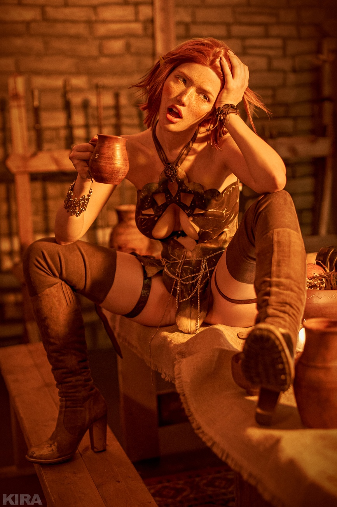

телеграмм для связи и предложений (автор)
SURE
поддержать проект
Мы вам очень очень обещаем что через сто лет вы будете очень богаты, честно честно! Мы планируем строить НЛО, летающая маршрутка-НЛО будет доступна кадому гражданину Российской Федерации, ну а пока что какие-то рельсы расположены в дубае, естественно вы этого не увидите в живую, потому что вкладываете деньги в наш лохотрон!
Критика
В опубликованных статьях были высказаны опасения по поводу информации, которую компания разместила о себе для продвижения инвестиций. Эти опасения включают в себя: нереалистичную доходность, обещанную инвесторам, стоимость его интеллектуальной собственности, количество завоёванных наград, чрезмерное количество предзаказанных договоров и людей/организаций, которые инвестировали в компанию.
Популярный белорусский новостной портал Onliner.by, например, рассказал, что утверждения SkyWay о предполагаемом проекте в Могилёве на самом деле не соответствуют действительности. Также не соответствуют действительности предлагаемые проекты в России, Крыму и Индии.
Первая статья Onliner.by о SkyWay была опубликована в сентябре 2016 года и комментировала строящийся в то время испытательный комплекс Экотехнопарка в Марьиной Горке.
В мае 2017 года газета «Волжская коммуна» опубликовала критическую статью на своем информационном портале о маркетинговой кампании в Самаре. Представитель компании Андрей Ховратов подал иск к редакции, но в марте 2018 года суд вынес решение в пользу ответчика.
В июле 2017 года «Primechaniya.ru» опубликовал статью с критикой маркетинговой кампании, продвигающей инвестиции в неподдерживаемый проект SkyWay в Севастополе[50]. Позже они опубликовали статью о юридических угрозах со стороны SkyWay и её сотрудника Андрея Ховратова, который представлял SkyWay в Крыму.
❗Осторожно, Скайвей! Глобальный транспортный лохотрон Sky Way!
Глобальный транспортный лохотрон Sky Way!
Интересная и познавательная статья о пирамидальном проекте Skyway, Струнный Транспорт Юницкого (СТЮ) PSW и его компаниях: GTI, UniSkyCoproration, RWS Investment Group, Euroasian Rail Skyway Systems, сайтах, руководителях!
Юридически, схема владения проектом Sky Way кардинально отличается от того, что пытаются донести до конечного потребителя ничем не обеспеченных акций сотрудники Виктора Морозова и Анатолия Юницкого.
В сети существует группа из шести сайтов, которые с 2014 года являются основными «воротами в мир нового планетарного транспорта». К этому чудесному миру предлагают присоединиться всем желающим «инвесторам» за наличный расчет. Под инвесторами понимаются обыкновенные лохи, а Великая транспортная система не более чем электронный МММ для тех, кто считает себя более умным, чтобы играть в МММ традиционную. Именно это, а также туповато-напористый PR, наличие «потемкинской деревни» для «хомяков», в Гомельской области республики Беларусь, выгодно отличает детище Морозова и Юницкого от детища Мавроди. Поэтому-то Sky Way все еще работает – подход у них более продуманный.
Основной концентратор денежного потока – четыре оффшорные компании в закрытой юрисдикции Британских Виргинских островов. Изначально Виктор Морозов сделал правильный ход, поскольку юрисдикция BVI еще долго останется непрозрачной, не смотря на декларацию о взаимодействии с российский ФНС. Разумеется, Виктор Морозов не мог предполагать расследования Международного консорциума журналистских расследований (International Consortium of Investigative Journalists (ICIJ)), одного из проектов «Центра за честность в обществе» (Center for Public Integrity (CPI)), американской некоммерческой организации, в отношении дела «Панамских бумаг». Это неформальное название утечки конфиденциальных документов панамской юридической компании Mossack Fonseca, которую СМИ в 2012 году называли лидером криминальной отрасли в стране. Результаты исследований документов охватывают период с 1977 по 2015 годы. Основной тематикой исследования результатов «Панамского досье» стало предание огласке наличия скрытой собственности политиков, крупных предпринимателей в т.ч. на территории РФ и связанных с этим конфликтов интересов. Именно эта база позволила журналистам, помимо всего прочего, обнаружить связь Виктора Морозова и Анатолия Юницкого, а также доказать их совместное владение компаниями IBC UniSky Coproration, Global Transport Investments Inc (GTI) BVI, RSW Investment Group Ltd, Euroasian Rail Skyway Systems Ltd BVI.
Денежный поток данные компании получают от своих «агентских компаний», зарегистрированных в Великобритании. Это FIRST SKYWAY INVEST GROUP LTD (20.11.2014, 09320759, Великобритания Директор Кудряшов Евгений Анатольевич), SWIG INTERNATIONAL LTD (09862987, 09.11.2015, Великобритания, Директор Арманд Мурниекс), SKYPARK LONDON LTD (09862865, 09.11.2015, Великобритания, Директор Арманд Мурниекс), Global Transnet UK LTD (09457445, 25.02.2015, Великобритания, Директор – Арманд Мурниекс).
Интересно, что собственником FIRST SKYWAY INVEST GROUP являлся на 10% являлся Евгений Кудряшов и на 90% Оксана Кудряшова. Собственником SWIG INTERNATIONAL LTD и SKYPARK LONDON LTD на 100% является Арманд Мурниекс, на 40% он владеет Global Transnet UK LTD. Другим собственником Global Transnet UK LTD, на 60% является «головная» компания Global Transport Investments Inc.(GTI), BVI. Нет сомнений, что это люди Виктора Морозова, полностью подконтрольные ему лично.
В свою очередь, английские компании получают денежные средства от множества российских ОООшек, в основном сконцентрированных в двух кластерах. Первый – кластер потребительского общества Евразия (ИНН 3811038226, 02.04.2015, Иркутск, Председатель Совета Счастливый Дмитрий Викторович). Второй – кластер Мифтахутдинова Салима Галиевича (ИНН 772451505227). Третий кластер – лично Анатолия Юницкого, с 2015 года подвергся резкому сокращению и «зачистке», в настоящее время является только демонстрационным и не представляет особого интереса.
Общая логика получения финансовых средств от физических лиц на территории России, основывается на продаже долей головной компании системы — IBC UniSky Coproration или второстепенной компании Euroasian Rail Skyway Systems Ltd BVI. Учитывая уставной капитал IBC UniSky Coproration в 400 млрд. долларов, количество долей исчисляется аналогичным числом. Номинал одной акции – 1 доллар США. Российские компании, также как английские организации, являются агентами по продаже долей группам потребителей. Оставляя себе неконтролируемые агентские проценты, основной финансовый поток они отправляют на счета Global Transport Investments Inc (GTI) BVI и RSW Investment Group Ltd. Дальнейшее движение этих средств возможно проследить в рамках уголовного дела. В целом это напоминает стандартную аферу из серии «участки на Луне» — рисуем красивую картинку, предлагаем в руки бумажку с обещание чего-то материального, но не сейчас а в будущем. Ближайшем и светлом.
Основной смысл аферы заключается в том, что «группа компаний Sky Way» вводит покупателей в заблуждение и продает им доли предприятия, не обеспеченные ничем – нет здесь активов или интеллектуальной собственности. Все, чем владеет UniSky Coproration это «дутый уставняк», в основу которого положены Великие Разработки Анатолия Юницкого, являющиеся, на проверку, устаревшей в 1986 году системой струнного транспорта, к разработке которой Юницкий был привлечен в качестве младшего соавтора. Проще говоря, Анатолий Юницкий не является владельцем прав на указанную систему, у него нет никаких патентов в странах Европы и США, которые могли бы как-то закрепить его «научное творчество». Это старый мразматик, который владеет тучей бумажного хлама на прототип, который устарел еще лет тридцать назад. Этот прототип, мало того, не имеет никакого практического применения. И Анатолий Юницкий, а также Виктор Морозов знали это изначально. Но они смогли организовать дело так красиво, что под эту несуществующую «интеллектуальную собственность» более чем 350 тысяч человек на территории России приобрели необеспеченные активами доли UniSky Coproration. Мошенничество в особо крупных размерах, совершенное группой лиц по предварительному сговору — именно так трактует эту ситуацию УК РФ.
Структура обоих «продающих» кластеров на территории России похожа. Во главе кластера стоит высококлассный мошенник-кидала, который существует в бизнесе обмана населения уже достаточно давно. Это касается как Дмитрия Счастливого, так и Салима Мифтахутдинова. Оба пробовали себя во всех реинкарнациях МММ, оба применяли технологии обмана к широким слоям населения.
Отличие между этими «кидалами» только одно – кластер Мифтахутдинова дополнительно специализируется на продаже БАД – так ООО «Международная Корпорация «Эдас» (ИНН 7726394968, 20.01.2017 Москва, Президент Мифтахутдинов Салим Галиевич), ЗАО «НАУЧНО-ПРОИЗВОДСТВЕННЫЙ МЕДИКО-ФАРМАЦЕВТИЧЕСКИЙ КОМПЛЕКС «ПРИРОДНЫЙ ДОКТОР» (ИНН 5008034956, 04.03.2003, Долгопрудный, Президент Мифтахутдинов Салим Галиевич), ООО «НАУЧНО-ПРОИЗВОДСТВЕННЫЙ КОМПЛЕКС БИОЭНЕРГОИНФОРМАЦИОННЫХ НАНОТЕХНОЛОГИЙ» («БЭНИТ») (ИНН 5010034819, 24.04.2007, Дубна, Ген.дир. Мифтахутдинов Салим Галиевич), «НАЦИОНАЛЬНЫЙ ЦЕНТР ИНТЕГРАТИВНОЙ МЕДИЦИНЫ» (ИНН 7726644551, 12.01.2010, Москва, Ген.дир. Карпеев Алексей Алексеевич) как раз и занимаются ежедневной телефонной атакой лиц преклонного возраста. Телефонные базы с личными данными они покупают на черном рынке с подачи собесов и государственных поликлиник. Огромные колл-центры по 400 сотрудников без перерывов и выходных, обманом осуществляют продажи «плацебо» тем, кто отчаялся стать здоровым и хочет продлить свое время активной жизни.
Кластер Счастливого, помимо продажи «долей» специализируется на «обучении» интернет-лохов, основная мысль которого заключается в «правильном инвестировании». При помощи ООО «Скай Вей Групп» (ИНН 4217164442, 29.08.2014, Новокузнецк, Ген.дир. Романенко Игорь Владимирович, Деятельность по дополнительному профессиональному образованию прочая, не включенная в другие группировки), ООО «Тнг» (ИНН 4217172179, 07.08.2015, Новокузнецк, Ген.дир Романенко Игорь Владимирович, Деятельность по дополнительному профессиональному образованию прочая, не включенная в другие группировки), ООО «Образовательный Портал «Евразия», 3811443440, 20.02.2017, Иркутск, Управляющий — индивидуальный предприниматель Овсепян Жирайр Грачикович, Образование дополнительное детей и взрослых прочее, не включенное в другие группировки), ООО «Тнг» (ИНН 310193290, 05.07.2016, Краснодар, Ген.дир. Гафияк Максим Николаевич, Деятельность по дополнительному профессиональному образованию прочая, не включенная в другие группировки), ООО «Академия Частного Инвестора» 2310197336, 23.12.2016, Краснодар, Ген.дир. Горячева Светлана Владимировна, Деятельность по оказанию консультационных и информационных услуг), Фонд Венчурных Инвестиций «Новые Транспортные Технологии» (ИНН 3811443030, 06.02.2017, Иркутск, Председатель Фонда, Счастливая Светлана Викторовна, Капиталовложения в уставные капиталы, венчурное инвестирование, в том числе посредством инвестиционных компаний), кластер Счастливого формирует огромный поток «важной инвестиционной информации» и успешно вербует в свои сети многочисленных потерявшихся в этой жизни людей. Попытки разбогатеть ничего не делая или вложившись в «успешную компанию с мировым именем» прельщают многих, и стандартные взносы в от 200 до 2 тыс. долл., не считая сумм «на обучение», мощным денежным потоком перечисляются на счета иностранных организаций-агентов Виктора Морозова и Анатолия Юницкого – конечно же за доли UniSky Coproration.
Все заявленные на сайтах компании Sky Way «руководители» со званиями типа «традиционный инвестор» или «профессиональный инвестор», и т.п. являются членами организованного преступного сообщества Виктора Морозова, приставленные к проекту с участием основного клоуна Анатолия Юницкого для успешного обеспечения мошеннических действий в отношении граждан Российской Федерации. С 2014 года на территории стран Европы Анатолий Юницкий и Виктор Морозов стали фигурантами уголовных дел о мошенничестве, однако на территории России и Белоруссии они все еще чувствуют себя достаточно спокойно.
Как было отмечено выше, кластер Анатолия Юницкого за последнее время лишился около 15 юридических лиц, что, очевидно, является попыткой сокрытия финансовых потоков перед активным расследованием уголовного дела по фактам мошенничества. В распоряжении Юницкого остаются только ООО «Струнный транспорт Юницкого» (СТЮ) (ИНН 7725646852, 29.09.2008, Москва, Ген.дир. Юницкий Анатолий Эдуардович, Научные исследования и разработки в области естественных и технических наук), ООО «Международный центр «ТРАНСНЕТ», 7726710170, 04.12.2012, Москва, Ген.дир. Мифтахутдинов Салим Галиевич производство железнодорожных локомотивов и подвижного состава) и НКО Фонд «Юнитран» содействия развитию струнного транспорта (некоммерческая организация) 7704199233, 29.04.1999, Москва, Президент Юницкий Анатолий Эдуардович). Эти предприятия позволяют ему представляться звучными должностями типа «президент» или «генеральный конструктор», однако, не имеющими под собой ничего кроме… сладкого звучания этих слов.
Разумеется, на всем протяжении своей деятельности, ни одно предприятие кластера Счастливого, Мифтахутдинова или Юницкого, никогда, ни разу не сдает финансовой отчетности за все периоды своего существования. Интересно, что территориальные инспекции ФНС испытывают прямо таки тотальную слепоту в отношении данных предприятий. Они не подвергаются не камеральным проверкам ни уголовному преследованию, что дает основания предполагать коррупционный сговор при помощи связей Виктора Морозова.
Проект Sky Way совершенно точно является финансовой пирамидой. Ее владелец Виктор Морозов – преступник, что признано в ряде стран Европы, откуда «успешный предприниматель» с «профессором-мечтателем» Юницким были вынуждены перебраться в Россию, а потом и в Белоруссию. Так бежать пришлось в 2014г из Литвы, где под Шауляем «два приятеля» тоже попытались построить «полигон транспортой системы» под боком у НАТОвской базы. Еще раньше они бежали из Польши и Чехии, где правоохранительные органы активно заинтересовались нечестными условиями инвестирования граждан в UniSky Coproration. Не смотря на то, что Виктор Морозов и Анатолий Юницкий еще на свободе – это все временно.
Статья честно позаимствована с форума MMGP